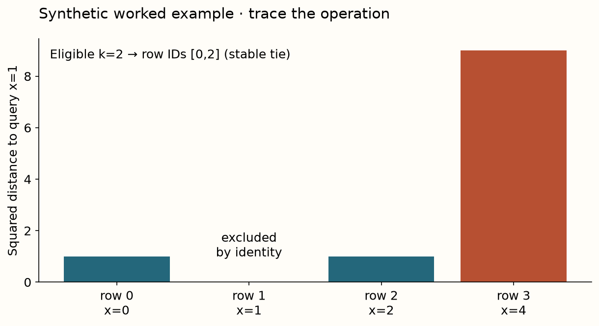
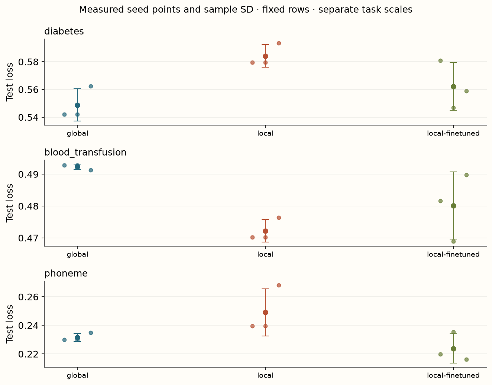

Year 2 · Quarter 3 · Lesson 067
Retrieve locally, then test adaptation
Understand the computation. Challenge the evidence. Produce a defensible result.
Core reading: 35–50 minutes. Lab: 45–75 minutes plus declared experiment time. This sequence builds the strong single-table baseline and information discipline required to test the relational thesis.
Retrieve before reading
Without notes: Does retrieving a new context prove that the PFN weights were fine-tuned? Explain why, then recall a related failure mode from an older lesson.
Change the examples and the inference procedure separately¶
Your goal is to build and distinguish three systems: a global pretrained PFN, the same PFN with a query-specific retrieved context, and a PFN adapted by gradients on local-context episodes. Read Thomas et al., Sections 2.2–2.4. Retrieval changes which labeled examples enter the forward pass. Fine-tuning changes neural parameters. One is not evidence that the other happened.
Nearby examples can help an irregular target because a limited context spends fewer slots on irrelevant regions. But locality can also discard useful distant structure, minority classes or rare exceptions. The paper evaluates retrieval and adaptation together and separately; the lesson keeps those ablations explicit rather than promising that nearest neighbors always improve a pretrained model.
Retrieve in a declared geometry¶
Fit imputation and scaling on training rows. For query q and candidate row x, squared Euclidean distance is the sum of squared coordinate differences after that transformation. Without scaling, a large-unit feature can dominate the neighborhood for purely numerical reasons. Even standardized Euclidean distance is a modeling choice: it assigns equal weight to coordinates, assumes that numeric proximity is useful and can behave poorly with many irrelevant features.
Select the k smallest distances using a stable tie rule. During training episodes, exclude the query or anchor by original row identity. Excluding only distance zero would wrongly remove distinct duplicate rows; excluding only the first neighbor could retain the anchor under ties. At deployment, candidate labels must also be available at prediction time. Learned retrieval metrics require their own fit/validation boundary.

Model architecture: retrieval around an actual pretrained PFN¶
The inference path is training-fitted preprocessing → query-to-memory distances → eligible neighbor IDs → labeled local context plus unlabeled query → pretrained row-token PFN → class probabilities. For the fine-tuned arm, local training episodes update the PFN before the same retrieval inference path is evaluated. The query label appears only in the episode loss or final scoring, never inside its context input.
Our measured local experiment uses the historical v1 checkpoint, 32-neighbor contexts and six gradient steps, with three seeds on three small tasks. Only 24 fixed test rows per task are scored to keep exact-neighbor inference affordable. This deliberately small sample makes uncertainty very weak. It is a real pretrained adaptation experiment, not a reproduction of LoCalPFN's full results. The no-preprocessing gradient path, small budgets and feature geometry are named deviations.
- MEMORYtrain-only scaled feature rowslabels must be available; IDs retained
- RETRIEVEsquared distances → eligible top kquery/anchor identity excluded in episodes
- PRETRAINED PFNlabeled local context + query featuressame historical v1 checkpoint in all arms
- ADAPTATION ONLYnear-anchor disjoint context/query splitquery BCE updates copied weights
- OUTPUT / SELECTIONvalidation selects adaptation stepfrozen state predicts untouched test rows
Approximate neighborhoods to share work¶
If every query uses a different exact neighborhood, the PFN cannot share one context computation across the whole query batch. Retrieval lookup may be cheap while the many forward and backward passes become expensive. The paper's episode construction trades some neighborhood accuracy for shared computation.
Sample an anchor from training data. Retrieve enough nearby rows for a context and several queries, excluding the anchor. Shuffle that neighborhood, then split it into disjoint context and query subsets. All those queries share the context, so one forward pass can train them together. Neighbors of an anchor are not guaranteed to be each other's nearest neighbors; that is the approximation, not a bug. Section 2.4.
Your code must retain the context and query IDs for every episode and assert disjointness. The known query targets supervise the loss after prediction. In the author run, validation selects among adaptation steps; the test set evaluates only the selected state. A nonzero parameter-change check confirms that the adapted arm really updated weights. It does not establish that the update was beneficial.
Compare failures as carefully as gains¶
The global and local frozen arms share the same checkpoint and feature treatment. The adapted local arm starts from a copy of those original weights. Copying matters because some historical packages cache model instances globally: mutating one instance can silently change what you thought was the untouched baseline.
A retrieved context can contain only one class. The local runner then uses a declared constant prediction for that context instead of manufacturing missing-class examples from the test set. This boundary should be visible in a production context policy. Expanding k until all classes appear would be another valid, but different, train-label-informed retrieval rule.

Measured interpretation. Exact retrieval alone does not uniformly improve the global v1 baseline. Six-step local fine-tuning changes the actual pretrained parameters and has the best mean rank in this three-task, 24-test-row-per-task panel. The small test sample and conditional seeds make this exploratory; no broad adaptation superiority follows.
Inspect the numerical evidence table
| mean | std | ||
|---|---|---|---|
| dataset | arm | ||
| blood_transfusion | global | 0.4923 | 0.0009 |
| local | 0.4722 | 0.0036 | |
| local-finetuned | 0.4801 | 0.0106 | |
| diabetes | global | 0.5488 | 0.0117 |
| local | 0.5842 | 0.0081 | |
| local-finetuned | 0.5622 | 0.0173 | |
| phoneme | global | 0.2315 | 0.0029 |
| local | 0.2491 | 0.0165 | |
| local-finetuned | 0.2238 | 0.0102 |
Exit: show the actual update and its evidence¶
Submit neighbor IDs, context/query disjointness, episode losses, validation-selected step, checkpoint identity, parameter-change magnitude and paired test scores for all three arms. Explain one case where locality or adaptation failed to help. Do not conclude that six steps and 24 test rows refute or reproduce the paper.
For the relational bridge, replace Euclidean neighbors with a point-in-time relational neighborhood. The same questions survive: which rows and labels were eligible, which computations can be shared, and what exactly was adapted? A graph retrieval mechanism earns credit only after those information and budget boundaries are checked.
Run the companion lab
Student notebook · Prepared lab · Open in Colab
2 substantive code tasks feed the live experiment, followed by behavioral CHECKs and a written EXIT artifact. The notebook contains the explanation and portable figures so it is teachable independently.
Ask me follow-up questions about any operation, CHECK or conclusion you cannot defend. Paste the EXIT artifact and your explanation for review. Revisit the retrieval question tomorrow and again in a week, before reopening the reference.